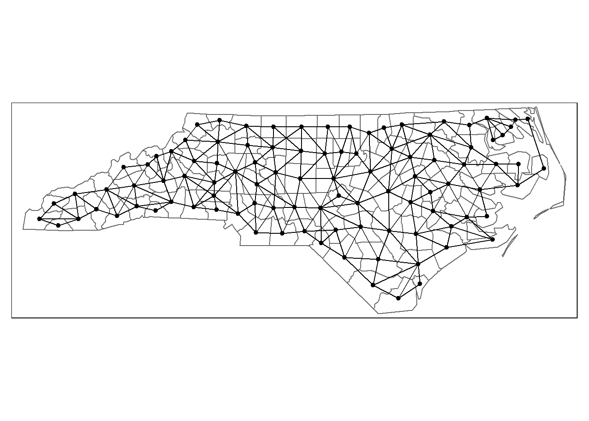

Spatial Autocorrelation I
Introduction to Spatial Autocorrelation
One of the most important laws in Geography is that things that are closer to one-another are more likely to be related to each other; this is Tobler’s first law of Geography:
> Everything is related to everything else, but near things are more related than distant thingsThis law gives us a foundation for an extremely powerful statistical tool – Spatial Autocorrelation. This measure assesses the amount of “related-ness” that can be explained by spatial proximity. Our null hypothesis, therefore, is that values occur randomly over space. To reject this null hypothesis means that spatial proximity has some effect on the observed values; think back to the results of R Module 7, and how our residuals seemed to “cluster” in certain parts of the state.
Spatial autocorrelation can be measured in a number of ways; in this module, we’ll lay the groundwork for the most widely-used statistic for spatial autocorrelation for a continuous variable: Moran’s I. This metric is a “global measure” – it is a single value that defines the entire dataset.
Before we can jump into calculating the Moran’s I, we have a few additional decisions and tasks to perform. This week, we’ll walk through the setup for calculating Moran’s I, specifically:
- The choice of neighborhood criterion, and,
- The creation of the spatial weights matrix
Choosing a neighborhood criterion
Moran’s I measures the correlation of a variable with itself across space, based on some criteria about how far away from a given unit other values will be compared. In other words, we have to define a “neighborhood” around each spatial unit to form the basis for comparing the value of a spatial unit with the values in its neighborhood.
Neighborhoods can be defined in a number of ways, but the two basic choices are either a distance-base approach or a common boundary-based approach. Distance-based approaches can work for both point and areal (polygon) data, although we typically assign an area to a point by calculating its centroid. Common boundary-based approaches are specifically used for areal data, because points don’t have “boundaries”.
Distance-Based
Distance-based approaches require you to specify some distance “threshold” that will be used to define which points or centroids will be classified as “neighbors” for the autocorrelation tests. The larger the distance, the more neighbors we expect. The figure below illustrates that concept. If we set a distance band at a distance of 1 around the focal unit (the red point), we’ll only have one other point in the neighborhood. If we increase the distance by 50% to 1.5, we’ll have two points in the neighborhood. So we always have a challenge in front of us: what distance do we use?

Boundary-Based
For boundary-based approaches, however, we define neighbors slightly differently. Instead of establishing a distance around a point and including all poitns within that distance, neighbors are defined by whether or not two areal units share boundaries. This can be done in several ways, thinking about it like a chess board. If neighbors should share 0-length boundaries (corners), we have a “Bishop’s case” neighborhood; if we exclude 0-length boundaries but include boundaries with length > 1 (edges), we have a “Rook’s case” neighborhood. Combining both cases, we have a “Queen’s case” neighborhood. Just as before, we are challenged to define what counts as a ‘shared’ boundary.
| Bishop’s Case | Rook’s Case | Queen’s Case |
|---|---|---|
 |
 |
 |
Spatial Weights Matrix
For either distance or boundary based approaches, we also have to decide how to measure the connection between neighboring units. The most common way is to use a binary measure. If a given spatial unit \(i\) is connected to a given spatial unit \(j\), the connection between them \(w_{ij}\) equals \(1\). If there is no connection, \(w_{ij} = 0\). If we were to record all the connections between all spatial units, we could record the results as a matrix, where each row and column of the matrix is a list of spatial units and each cell in the matrix is our binary measure of whether a connection exists between those spatial units.
For example, if we have seven counties, We,
Ad, Ar, De, Bo,
Je, and Do, we can specify the connections
between each pair of counties using Queen’s case boundaries, and measure
those connections using a binary value. If we summarize this in matrix
form, we have a formal expression of connectivity based on our choices.
This is called the spatial weights matrix; you’ll find
it referred to in spatial autocorrelation formulas as \(w_{ij}\), and looks like:

Working with the Data
Let’s explore both of these steps using R. We’ll work again with our
manufacturing employment data for North Carolina. This week, you’ll need
to install another package, spdep, which you’ll use to
generate the spatial weights matrix for the global Moran’s I.
library(sf)
library(spdep)
NC <- read_sf("data/NC_REGION.shp")Whenever we perform any sort of spatial analysis in GIS, it’s important to work in a projected coordinate system. Remember how maps like the Mercator projection distort the Earth’s surface as it approaches the poles? It’s a similar concept; instead of using latitude/longitude coordinates, we need to work with a projected system which gives us linear units.
sf can reproject our data with the
st_transform() function, an argument of which is
crs, or coordinate reference system. We’ll use
something called the “EPSG code”, which is a unique identifier for each
coordinate reference system, such as Lambert Conformal Conic, UTM Zone
17N, etc. We’ll use EPSG:26917 for our data, which we can
get some info about with st_crs():
st_crs("EPSG:26917")class(st_crs("EPSG:26917"))## [1] "crs"Let’s transform our data:
# The 'crs' argument works best when we give it an object of class 'crs', such
# as what's given by the st_crs() function
NC_UTM <- st_transform(NC, crs = st_crs("EPSG:26917"))If we plot our original vs. our transformed, hopefully we’ll see some differences! Notice the northern border now appears slightly “curved”:
library(tmap)
# qtm() can be used to generate a "quick thematic map", which is great for
# visualizing our data. Check it out with ?tmap::qtm()
t1 <- qtm(NC)
t2 <- qtm(NC_UTM)
tmap_arrange(t1, t2)Let’s calculate the neighbor criterion with a boundary-based
approach, using the spdep::poly2nb() function. We’ll also
calculate the centroids of our counties.
queen_nb <- poly2nb(NC_UTM, queen = TRUE)
NC_centroids <- st_centroid(NC_UTM)## Warning in st_centroid.sf(NC_UTM): st_centroid assumes attributes are constant
## over geometries of xLet’s go ahead and also assign NC_centroids$geometry to
an object called nc_coords; we’ll use it a lot later!
nc_coords <- NC_centroids$geometryIf we want to plot the lines, it’s easiest to use the
nb2lines() function, which generates an sf
object of the connections, allowing us to generate plots with
tmap, ggplot2, etc.
nb_lines <- nb2lines(nb = queen_nb,
coords = nc_coords)
tm_shape(NC_UTM) +
tm_borders() +
tm_shape(nb_lines) + tm_lines() +
tm_shape(NC_centroids) + tm_dots(size = 0.125)
Questions:
As in previous R Modules, type up your report as an R Markdown document, and export it as a .pdf. Include your figures, plots, and answers, and include your R code.
- Use the
poly2nb()function to create a Rook’s case neighbor construct by changingqueen = TRUEtoqueen = FALSE. Call this new objectrook_nbin your code. Plot a map usingtmapthat shows the counties, the connections as lines, and the county centroids as points. Include a title (hint: usemain.titleif you want to have the title outside the map frame).
Notice how some counties have many neighbors and some have relatively few. These constructs are sensitive to boundary effects; counties on the edge of the study area will always have fewer connections, because they’re not surrounded on all sides. We can get a helpful summary of the distributions of connections between counties for the different constructs we create.
summary(queen_nb)## Neighbour list object:
## Number of regions: 100
## Number of nonzero links: 490
## Percentage nonzero weights: 4.9
## Average number of links: 4.9
## Link number distribution:
##
## 2 3 4 5 6 7 8 9
## 8 15 17 23 19 14 2 2
## 8 least connected regions:
## 4 21 45 56 77 80 90 99 with 2 links
## 2 most connected regions:
## 39 67 with 9 linksThis summary provides a great deal of information. Of particular
interest is the ‘link number distribution’ report: the top row of
numbers is the number of links, and the bottom is the number of counties
with that number of links. So, we have 8 counties with two links, 23
counties with five, 17 with four, etc. Because we didn’t tell
poly2nb what our counties were called, we can’t easily
locate these counties on the map.
There’s actually a bit of a bug with the
poly2nbfunction: the argument row.names
doesn’t work if we give it an object from sf (i.e., the
data we’ve been working on so far), so we have to have a bit of a
workaround if we want to assign the names:
queen_names <- NC_UTM %>%
tibble::column_to_rownames("NAME") %>%
st_as_sf() %>%
poly2nb(pl = .,
queen = TRUE)
summary(queen_names)## Neighbour list object:
## Number of regions: 100
## Number of nonzero links: 490
## Percentage nonzero weights: 4.9
## Average number of links: 4.9
## Link number distribution:
##
## 2 3 4 5 6 7 8 9
## 8 15 17 23 19 14 2 2
## 8 least connected regions:
## Currituck Chowan Tyrrell Dare Polk Pamlico Clay New Hanover with 2 links
## 2 most connected regions:
## Iredell Moore with 9 links- Compare the distribution of links between the Queen’s case and Rook’s case. What changed when we restricted the neighbor criterion by using a Rook’s case? Using the code above, what are names of the ‘least connected regions’ generated with a Rook’s case neighborhood? Provide the code used to get your results.
Nearest Neighbor
To get around this type of problem, where some counties have very few connections, we use a different method called k-nearest neighbor. This method specifies the number of connections for each spatial unit; for instance, when \(k=1\), each spatial unit will have exactly one neighbor. The choice for which unit becomes the neighbor is based on distance between points or centroids; the unit that is “closest” is classified as the neighbor.
Because we’re using a distance-based criteria, it’s good that we’ve
already projected our shapefile to a crs with linear units.
Let’s demonstrate a \(k = 1\) setup
using the knn2nb() (k-nearest neighbor to
neighbor-list) function:
# We'll use the county name as the rownames. Unlike in poly2nb, the row.names
# argument actually seems to work :)
NC_knn1 <- knn2nb(
knn = knearneigh(x = NC_centroids,
k = 1),
row.names = NC_UTM$NAME
)
# Now, let's make a plot. Remember, the nb2lines function is used to convert a
# neighbor list object into an "sf-compatible" object which we can map.
knn_lines <- nb2lines(
nb = NC_knn1,
coords = nc_coords
)
qtm(NC_UTM, title = "k = 1") +
qtm(knn_lines) +
qtm(NC_centroids)This is quite different to our Rook’s and Queen’s cases. Again, you
can use summary() to get the details of the connections
between spatial units. Doing this shows that the variability in the
distribution of connections is gone; all counties have exactly one
connection to another county.
Questions
- In addition to \(k=1\), use
knn2nb()to create neighbor constructs for \(k=2\), \(k=4\), and \(k=6\). Plot the connections for each usingtmap, including the label. Provide your R code and plots for the neighbor constructs. Usetmap_arrange()to place all 4 plots in a single “image”.
- Try and do this with some R programming; rather than just
generating each construct one-at-a-time, try using things like for
loops,
lapply,purrr::mapfunctions, etc.
Distance-Based Approach
For the final demonstration, let’s use a distance-based approach. Rather than specifying a specific number of nearest neighbors, let’s pick a distance threshold and apply it to every county. Any county within this distance will be considered a neighbor. What distance should we use for the threshold? Let’s explore this using the sets of distances used for \(k=1\) nearest neighbors.
First, we need to calculate the shortest distance between every centroid:
dist <- nbdists(nb = NC_knn1,
coords = nc_coords) %>%
# We'll use the unlist() function to convert our list of distances to a vector, which is easier to compare.
unlist()
summary(dist)## Min. 1st Qu. Median Mean 3rd Qu. Max.
## 12245 27152 29780 29427 32687 41087We can see that the maximum distance (in meters) between any of the two counties is 41,087. If we set this as our distance band, we can be sure that every county will have at least one neighbor.
Now, we can use dnearneigh() to create a distance-based
neighbor construct:
max_dist <- max(dist)
NC_dnn <- dnearneigh(x = NC_centroids,
d1 = 0,
d2 = max_dist,
row.names = NC_UTM$NAME
)
NC_dnn_sf <- nb2lines(
NC_dnn, coords = nc_coords
)
qtm(NC_UTM) + qtm(NC_dnn_sf)It looks like it’s in between the Queen and Rook’s case, and the
\(k = 1\) case. Again, you can call
summary() on NC_dnn to see the distribution of
the numbers of links.
We can also explore what happens as we increase or decrease the
distance threshold by modifying the d2 argument, which
controls the “upper limit” of the distance-based neighbor.
Questions:
- In addition to our “100%” distance threshold (the code above), create plots for:
- 50% of the maximum distance,
- 125% of the maximum distance,
- 150% of the maximum distance.
- Use
tmapto do this, and arrange all plots in a single image usingtmap_arrange(). Be sure to label each plot. - What happened to the number of connections from the 75% to the 125% construct?
© 2022 brownhr & M. Sugg. v.0.0.10